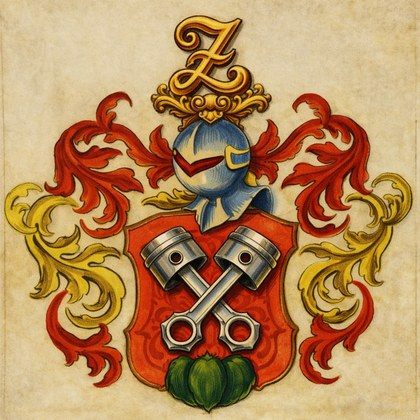

Scegli come avviare KnightTruckerNavy VERSIONE 0.70.44 Bootstrap pronto
KnightTruckerNavy GATTO 1.3/ Rubrica
Cliente
Citta
Nazione
GPS
Note
Nessun distributore trovato
Aggiungi il primo distributore oppure modifica i filtri.
🗺 MAPPA
🚙 PERCORSO HGV >3.5t — con restrizioni reali
Dimensioni veicolo (salvate automaticamente)
Profilo camion
Se compili questo campo, ha priorità sul posto salvato.
→
Accetta indirizzo, POI/attività (es. Shell vicino a Novara, AS24 Novara) oppure coordinate.
Soste intermedie
Nuovo Distributore
➤ Navigazione veloce
Partenza automatica dalla posizione GPS corrente. Scegli solo la destinazione.
Sono mostrati i clienti con coordinate GPS valide.
Inserisci un indirizzo sufficientemente completo.
Puoi scrivere nome attività + località, oppure usare “vicino a”.
Formato: latitudine, longitudine.
Calcolo del percorso HGV…
Destinazione
--
--KM
--TEMPO HGV
--ARRIVO
--
Scegli la destinazione
--
Tocca il risultato corretto. La destinazione scelta verrà usata per il calcolo HGV.
by Andrea Zollet
href="Navigator.html">TORAKIKEN

KnightTruckerNavy
GATTO 1.3
IL VERO NAVIGATORE PER CAMION DI TORAKIKY
Professional Navigator · singolo motore · Hybrid satellitare · singolo GPS · cockpit
KnightTruckerNavy · Navigatore legacy
RETE: --
MAPPA: --
AGGANCIO: --
Nessuna rotta caricata
--
Altezza
--
Larghezza
--
Peso
--
Assi
--
GPS
RESTRIZIONE CAMION
Servizi camion lungo la rotta
Database servizi: controllo…
DB: --
↑Corsia consigliata
Restrizioni: da verificare online
--Traffico stimato
--Meteo avanti
--Vento
--Guida continua
ATTENZIONE METEO
RETE: --
GPS: --
Connessione o GPS non disponibili. Uso i dati locali disponibili.
Diagnostica KnightTruckerNavy
GPS--
Rete--
Mappa--
Google Drive--
Audio--
Comandi vocali--
Offline--
Profilo camion--
Rotta--
Meteo--
Diagnostica pronta.
Comandi vocali KnightTruckerNavy
Premi il microfono e parla.
Assistente pronto.
“Trova parcheggio camion” Cerca parcheggi.
“Mostra servizi” Apre servizi camion.
“Mostra meteo” Aggiorna meteo.
“Quanto manca?” Dice distanza e ETA.
“Vista 3D / 2D” Cambia prospettiva.
“Muto / Audio” Disattiva o riattiva suono.
“Ricalcola percorso” Tenta ricalcolo online.
“Rotte offline” Apre archivio rotte.
“Guida pulita” Attiva/disattiva UI pulita.
“Follow” Ricentra sulla posizione.
COMANDI VOCALI
Impostazioni navigatore
Modalità guida
Gli avvisi critici camion e fuori-rotta restano sempre visibili.
Comportamento automatico
Queste preferenze vengono salvate sul telefono.
Stato moduli
GPS
MAPPA
DRIVE
OFFLINE
AUDIO
METEO
SERVIZI
PROFILO
ROTTA
Database aree di servizio Europa
Controllo database…
DB: --
Categorie: 🛣️ area di servizio e 🌳 area di riposo. Quando presenti nel database: ⛽ carburante · 🚛 parcheggio camion · 🚻 WC · 🚿 docce · 🍴 ristorante · ☕ bar · 💧 acqua · 🛏 pernottamento · 🛒 negozio · 📶 Wi‑Fi · 🔌 ricarica.
Manutenzione
Usa questi comandi se l'interfaccia si comporta in modo anomalo dopo molti aggiornamenti.
Audio navigazione
Generale
Voce guida
Avvisi camion
Suoni UI
Stile voce
Icona rotta compatta
Rotte HGV offline
Nessuna rotta offline caricata.
Driver Assist
00:00Guida continua
04:30Alla pausa
0Soste rilevate
BassoRischio meteo
--Prossimo parcheggio camion
--Prossimo carburante
↑
Segui la rottaNavigazione pronta
--
--
Residui
--
ETA
--
Percorso
0
km/h
FUORI ROTTA · recupero percorso salvato
Gestione mappe offline
Copertura offline: --
OFFLINE: 0 tessere
Pacchetto offline percorso
Pronto--
GPS: attesa…
ARRIVATEN A DESTINAZIONEN !!!!
Tocca l'immagine per chiudere
--km
--tempo
--km/h medi
ACCESSO CONDIZIONATO SUL PERCORSO
Il percorso attraversa una strada accessibile solo in determinate condizioni. Usala solo se la tua missione soddisfa la segnaletica reale.
RECUPERO DA RESTRIZIONE HGVProsegui in sicurezza fino a una strada consentita. Ricalcolo automatico attivo.